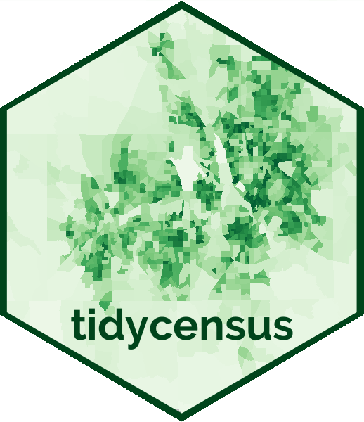
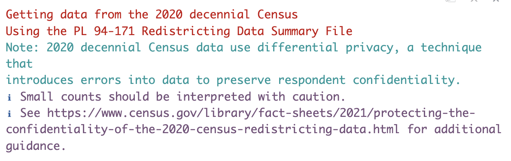
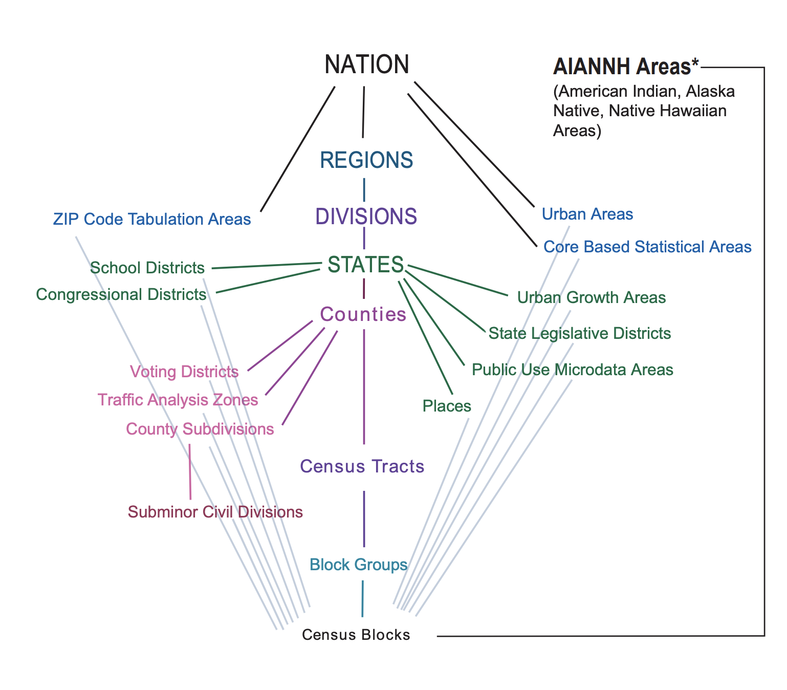

library(tidycensus)
library(dplyr)
library(tidyr)
library(ggplot2)Learning Objectives
- Provide an overview of US Census data
- Introduce the main functions of the
tidycensuspackage to be able to work with census data - Review data wrangling function to get census data ready for analysis
- Plot census data using
ggplot2
Acknowledgement
This lesson is based on Analyzing US Census Data: Methods, Maps, and Models in R, (Chapter 1 through 4) by Kyle Walker. And Walker’s workshop “Analyzing 2020 Census Data with R and tidycensus” for University of Michigan (2022). GitHub repository here.
11.1 Introduction to tidycensus

When working with census data, the general workflow would be to go to data.census.gov, filter data and queries based on variables and geographies, and then download the data into a spreadsheet. People that work with census data do this over and over again.
The tidycensus package (Walker and Matt (2021)) was developed to systematize this process and do this systematization using R. In 2012 the US Census Bureau released the Census Application Programming Interface (API) as a way to disseminate government data resources to the public. This interface now provides programmatic access to hundreds of data resources from the Census Bureau. The vision behind this package was to incorporate the API access into an R package to facilitate access to census data using R.
Note there are other R packages that interact with the census APIs, such as censusapi and acs. In this lesson, we are going to focus on the tidycensus package, given that is continuously maintained by the authors, has good documentation and it makes it easy to work with other tidyverse functions.
From Walkers Book:
“The
tidycensusis an R package that provides an interface to access and work with the United States Census Bureau data. It simplifies the process of retrieving and analyzing census data by allowing users to query data directly from the Census Bureau’s APIs and then organize the data into a tidy format for easy manipulation and analysis.”
Note that this lesson is just an introduction to this package. Here we aim to providing the basic tools for you to understand how the core functions of this package work so you can adapt to your specific census data needs.
11.1.1 General Structure
tidycensus takes an opinionated approach to accessing a selected number of census APIs. The main goal is to facilitate access to a few census APIs through R.
Data files you can access through this package are named and described in the table below.
| Survey Name | Description |
|---|---|
| Decennial census | Complete enumeration of the US population to assist with apportionment. It asks a limited set of questions on race, ethnicity, age, sex, and housing tenure. Data from 2000, 2010, available data from 2020 |
| American Community Survey (ACS) | Detailed demographic information about US population. Annual data updates. 1-year ACS greater, and the 5-year ACS, which is a moving average of data over a 5-year period that covers geographies down to the Census block group. ACS data represent estimates rather than precise counts. Data includes margin of error. |
| Population estimate program | These datasets include yearly estimates of population characteristics by state, county, and metropolitan area, along with components of change demographic estimates like births, deaths, and migration rates. |
| ACS Public Use Microdata | Anonymized individual-level records from the ACS organized by households |
| Migration Flows | Information about in and outflows from several geographies from the 5-year ACS samples. |
The idea behind this package is to make the tedious process of working with Census data more concise. It pulls data from the census API and returns it to the user in a “tidy” format.
Can easily merge census geometries to data for mapping. Which apparently can be a very time-consuming task. Unfortunately, for this session, we will not get into mapping. Check out Analyzing Census Data Chapter 6: Mapping Census Data with R for more details on this subject.
Other features of this package:
- Includes tools for handling margins of errors in the ACS and working with survey weights in the ACS Public Use Microdata.
- You can request data from states and counties by name instead of FIPS codes.
11.2 Getting Started
Setup
Make sure you’re in the right project (
training_{USERNAME}) and use theGitworkflow byPulling to check for any changes. Then, create a new Quarto document, delete the default text, and save this document.Load the packages we’ll need:
- Get an API key to connect our session with the census data and be able to retrieve data
- Go to https://api.census.gov/data/key_signup.html
- Fill out the form
- Check your email for your key.
- Use the
census_api_key()function to set your key. Note:install = TRUEforces r to write this key to a file in our R environment that will be read every time you use R. This means, by setting this argument toTRUE, you only have to do it once in any computer you are working. If you see this argument asFALSE, R will not remember this key next time you come back.
census_api_key("YOUR KEY GOES HERE", install = TRUE)Restart R
Run the library chunk again.
Note 1: As we are working on the server, the package is already installed in our system. But when you go work on your own computers, you will have to install the package using install.package("tidycensus"), if you haven’t done that already.
Note 2: The API key you received in your email is good to use in other instances too. Keep this email! We are using the key to connect your included-crab session with the US Census data. You can use the same key to connect your personal/work computer too.
11.3 Quering data (focus on 2020 decennial data)
11.3.1 The 2020 Decennial Data
Before we dive into retrieving data from the 2020 decennial census, we need to mention a couple of things. Based on all the challenges of running a decennial census during a pandemic, the Census Bureau had to make decisions and provide new and different functionalists. The pandemic also delayed the release of the 2020 census data. You can check here what data products have been released until now, and the Bureau’s timeline to release more data.
One of the main files from the 2020 census is the PL94-171 Redistricting Summary File which is used for congressional appointments and redistricting. Variable available in this file are:
- Total counts (population & households)
- Occupied/vacant housing unit
- Total and voting age population breakdown by race & ethnicity
- Group quarter status
Demographic and Housing Characteristics Summary Files (Different to summary file 1 form 2010). Contains age and sex breakdowns and detailed race and ethnicity data.
11.3.2 Getting census data
The main functions from tidycensus represent the select number of datasets that this package provides access to. The following table provides the description for each of the core functions from Walker’s book.
| Function | Description |
|---|---|
get_decennial() |
Retrieves data from the US Decennial Census APIs for 2000, 2010, and 2020. |
get_acs() |
Requests data from the 1-year and 5-year American Community Survey samples. Data are available from the 1-year ACS back to 2005 and the 5-year ACS back to 2005-2009. |
get_estimates() |
Allows you to get the Population Estimates. These datasets include yearly estimates of population characteristics by state, county, and metropolitan area, along with components of change demographic estimates like births, deaths, and migration rates. |
get_pums() |
Accesses data from the ACS Public Use Microdata Sample APIs. These samples include anonymized individual-level records from the ACS organized by household and are highly useful for many different social science analyses |
get_flows() |
an interface to the ACS Migration Flows APIs. Includes information on in- and out-flows from various geographies for the 5-year ACS samples, enabling origin-destination analyses. |
Here we are going to focus on getting started with using get_decennial() as a way of understanding how this package works.
With get_decennial(), you can query data from 2000, 2010 and 2020 decennial census. The 3 necessary arguments you need to provide are:
- Geography
- Variable
- Year
Specifying a summary file
Another argument form get_decennial() is sumfile =.
“The Census summary file; if NULL, defaults to”pl” when the year is 2020 and “sf1” for 2000 and 2010. Not all summary files are available for each decennial Census year. Make sure you are using the correct summary file for your requested variables, as variable IDs may be repeated across summary files and represent different topics”
So, to get the total population for 2020 by state the code would look like this.
pop_2020 <- get_decennial(
geography = "state",
variable = "P1_001N",
year = 2020)The resulting data frame you get from this query is a tibble in “tidy” format with 4 columns:
- GEOID = Code for the geographic unit (in this case FIP codes)
- variable = census code for the variable (eg. P1_001N is the code for the total population in the 2020 population redistricting file)
- value = population count
This table provides data for one single variable. In this case the variable is “P1_001N” which refers to total population.
Message

You get this message the first time you run get_decennial() in your session. It first makes sure your are retrieving the correct data. Then it mentions the fact that the 2020 census “Introduces errors differential privacy”.
In the past other privacy methods have been used to preserve confidentiality. Differential privacy is a method that purposely introduces noise or error into the data in order to make it impossible or at least very difficult to reverse engineer the census and track where the responses are coming from. This has an impact on small area counts (e.g.: block with children but not adults). This is something to be aware if you are working with small population geographies.
Only the population data is differentially infused. The household data are not.
Note that to get total population data for the 2010 decennial census the variable code is different than the 2020 census (even though the arguments of the functions are the same). In this case the code would look like this.
pop_2010 <- get_decennial(
geography = "state",
variables = "P001001",
year = 2010)When using get_decennial(), you can also specify a specific table instead of only one variable. A table of data contains multiple variables. The code for getting the “P2” table from 2020 would look like this.
table_p2_2020 <- get_decennial(
geography = "state",
table = "P2",
year = 2020)Table P2 is one of the tables of the 2020 census, which provides counts by Race with Hispanic origins.
Let’s check which variables we have in the P2 table.
unique(table_p2_2020$variable)One of the hardest things to wrap your head around when using tidycensus is understanding the difference between files, tables, and variables and how they work.
Let’s take a look on how this works. Data is released in files. Each file is a data product from the Census Bureau (find details of the Census data products here), for example, PL 94-171 is one of the files for the 2020 Decennial Census. Each of these files contains many tables (P1, P2 .. P5). Each table covers a specific topic. For example, P2 provides counts by race by Hispanic origins. Then each table has multiple variables. The variable code seems to, for the most part, start with the table code. For example, the unique codes values we printed from table P2 all start with P2_.
How do we navigate all these codes? There is no straightforward way. In part, this dilemma is part of working with census data, which in itself is complicated. However, tidycensus provides some help with a function called load_variables()
This function scrapes the variables’ names from the census website and gives you a data frame that you can interact with. This variable requires you to input a year and a file name.
So let’s run this function and create an object named vars_pl_2020 This will give us all the variable codes and definitions for the PL 94-171 redistricting file.
vars_pl_2020 <- load_variables(2020, "pl")
## for 20210
vars_pl_2010 <- load_variables(2010, "pl")Now, let’s take a look at this data frame. And interactively search for the variables in this file. This data frame has 3 columns, variable’s name, label, and concept, which represent the table’s name.
For example, here we can see the variable “P1_001N” that we used earlier to retrieve the total population by state. We can also scroll down and see that all variables that start with P2, belong to the P2 table “HISPANIC OR LATINO, AND NOT HISPANIC OR LATINO BY RACE”. We can also see the variable codes for the H1 table for Occupancy or Housing.
Tables available in the 2020 Census PL file:
| Table Name | Description |
|---|---|
| H1 | Occupancy status by household |
| P1 | Race by Hispanic origin |
| P3 | Race for the population 18+ |
| P4 | Race by Hispanic origin for the population 18+ |
| P5 | Group quarters status |
Note: “Group quarters are places where people live or stay, in a group living arrangement, that is owned or managed by an entity or organization providing housing and/or services for the residents.” (US Census Bureau Glossary)
We won’t get into much more detail, but, you can query any of the available files for the 2020 census data. Like the Demographic and Housing Characteristics File (DHC) by running the following code. This is a much larger file with much more tables than the PL file.
vars_dhc_2020 <- load_variables(2020, "dhc")
## Note you have to specify the file with sumfile =
household_2020 <- get_decennial(
geography = "state",
variable = "H10_001N",
year = 2020,
sumfile = "dhc")The idea behind load_variables() is for you to be able to search for the variable code for the variable you need.
Now that we’ve talked about variables let’s talk a little bit about geography and how tidycensus makes it easy to query data within census geographies. Census data is tabulated in enumeration units. These units are specific geographies including legal entities such as states and counties, and statistical entities that are not official jurisdictions but used to standardize data. The graphic below, provided by census.gov shows the standard hierarchy of census geographic entities.
 The parameter geography = in get_acs() and get_decennial() allows us to request data from common enumeration units. This mean we can name the specific geography we want data from. For example, let’s get data for Hispanic population the 6 counties around the Delta.
delta_hispanic <- get_decennial(
geography = "county",
state = "CA",
county = c("Alameda", "Contra Costa", "Sacramento", "San Joaquin", "Solano", "Yolo"),
variables = "P2_002N",
year = 2020)To learn more about the arguments for geography for each core function of tidycensus, check out the documentation here.
11.3.2.1 Quering for multiple variables
The varaible argument can take a vector of variables as an input, allowing to query for more than one variable at the time. We can create a vector and then call that vector as the input of the variable argument, or we can use the concatenate function c() and request data from multiple variables.
## Vector with race variables codes
race_vars <- c(
Hispanic = "P2_002N",
White = "P2_005N",
Black = "P2_006N",
Native = "P2_007N",
Asian = "P2_008N",
HIPI = "P2_009N") ## Native Hawaiian and other Pacific Islander
delta_race <- get_decennial(
geography = "county",
state = "CA",
county = c("Alameda", "Contra Costa", "Sacramento", "San Joaquin", "Solano", "Yolo"),
variables = race_vars,
summary_var = "P2_001N",
year = 2020)Note how this table returns the variable name we assigned in the vector above instead of the variable code! This is a handy option, given that the codes can be hard to remember what is what.
Also, note that we added one more argument to our request summary_var = "P2_001N. This adds one more column to our output data frame, one with the summary variable value.
In every table you can generally find a variable that is an appropriate denominators for a group of variables. Following the example above, the P2 table, which provides population by race with Hispanic origin, the variable “P2001N” represents the total population. Because this variable is an an appropriate denominator for the other variables in the table, it helps to have it in a different column to make it easier to calculate proportions or percentage.
11.4 Getting Census Data ready for analysis
Once we access the data we want, we can apply our data wrangling skills to get the data in the format that we want.
Let’s demonstrate this with an example. Let’s compare the distribution of percentage White population and percentage Hispanic population by census track vary among the Delta Counties.
The first step is to get the data.
Exercise
Make a query to get White and Hispanic population data for Delta counties by tracks from the 2020 Decennial Census. Include the total population summary variable (summary_var = "P2_001N").
Hint: variable codes are:
- Total Hispanic population = P2_002N
- Total White population = P2_005N
Answer
delta_track_hw <- get_decennial(
geography = "tract",
variables = c(hispanic = "P2_002N",
white = "P2_005N"),
summary_var = "P2_001N",
state = "CA",
county = c("Alameda", "Contra Costa", "Sacramento", "San Joaquin", "Solano", "Yolo"),
year = 2020)We can check our data by calling the View(delta_track_hw) function in the console.
Now that we have our data, next thing we will do is calculate the percentage of White and Hispanic population in each track. Given that we have the summary variable within our data set we can easily add a new column with the percentage. And then, we will also clean the NAMES column and separate track, county and state into it’s own column.
delta_track_clean <- delta_track_hw %>%
mutate(percent = 100 * (value / summary_value)) %>%
separate(NAME, into = c("tract", "county", "state"),
sep = ", ")Note that we can apply all other dplyr functions we have learned to this dataset depending on what we want to achieve. One of the main goals of tidycensus is to make the output data frames compatible with tidyverse functions.
Now that we have or “clean” data, with all the variables we need. Let’s plot this data to compare the distribution of percentage White population and percentage Hispanic population by census track vary among the Delta Counties.
11.5 Visualizing Census Data with ggplot2
Applying all what we learned earlier this week, we are going to use ggplot2 to create some wonderful plots!
ggplot(delta_track_hw_cl,
aes(x = percent, fill = county)) +
geom_density(alpha = 0.3)+
facet_wrap(~variable)+
theme_light()11.6 Notes on get_acs()
- The functions operates very similar to
get_decennial() - The main differences is that is access a different survey so the options for each argument change.
- The two required arguments are
geographyandvariables. The function defaults to the 2017-2021 5-year ACS - 1-year ACS data are more current, but are only available for geographies of population 65,000 and greater
- Access 1-year ACS data with the argument
survey = "acs1"; defaults to “acs5” - Example code to get median income for California by county
## 1-year survey
median_income_1yr <- get_acs(
geography = "county",
variables = "B19013_001",
state = "CA",
year = 2021,
survey = "acs1")
## 5-year survey. Defaults to the 2017-2021 5-year ACS
median_income_5yr <- get_acs(
geography = "county",
variables = "B19013_001",
state = "CA")- You can access to different variables in a survey with the
load_variable()function
## variables for 5-year 2017-2021 ACS
vars <- load_variables(2021, "acs5")
Walker, Kyle, and Herman Matt. 2021. “Tidycensus: Load US Census Boundary and Attribute Data as ’Tidyverse’ and ’Sf’ -Ready Data Frames.” https://github.com/walkerke/tidycensus.